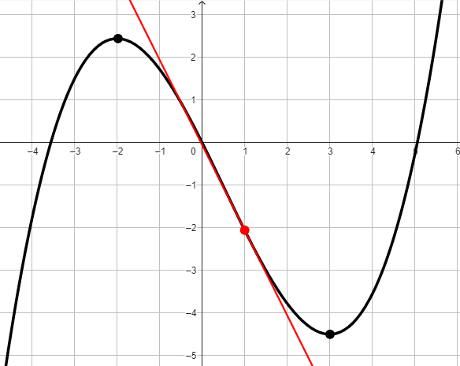

Compiti per casa
Questi esercizi sono di ripasso in vista della verifica. Se avete dubbi riguardo a qualcuno
di essi potete consultare le due schede di esercizio riassuntive dispnibili a
questo e
questo link.
Esercizio 1
-
Scrivere la definizione di derivata di una funzione \(f\) in \(x\).
-
Utilizzare la definizione sopra citata per calcolare la derivata della funzione
\[
f(x) = 3x - 2
\]
Esercizio 2
Consideriamo la funzione \(f\) rappresentata dal grafico in figura.
-
Calcolare \(f'(1)\)
-
Stabilire per quali valori della \(x\) la derivata della funzione \(f\) è positiva.

Esercizio 3
Derivare la funzione
\[
f(x) = -4x^2 + \dfrac{2}{x} -2\sqrt[3]{x^2}
\]
Esercizio 4
Derivare la funzione
\[
f(x) = \dfrac{2x^2}{3x^2 - 2}
\]
Esercizio 5
Derivare la funzione
\[
f(x) = ln(5x^2 - 1)
\]